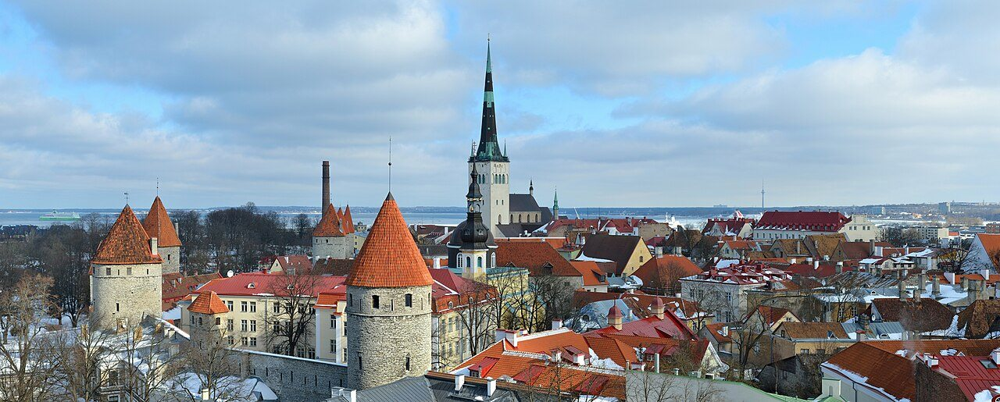
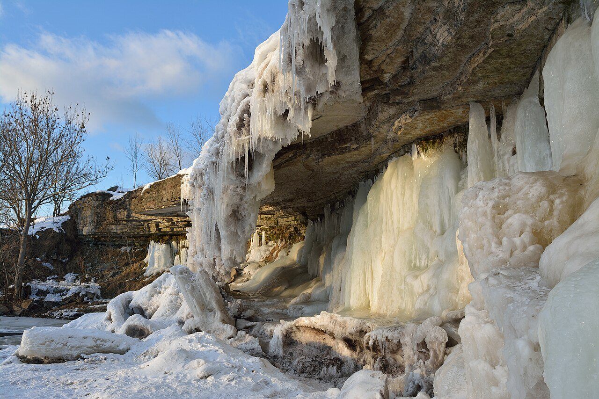
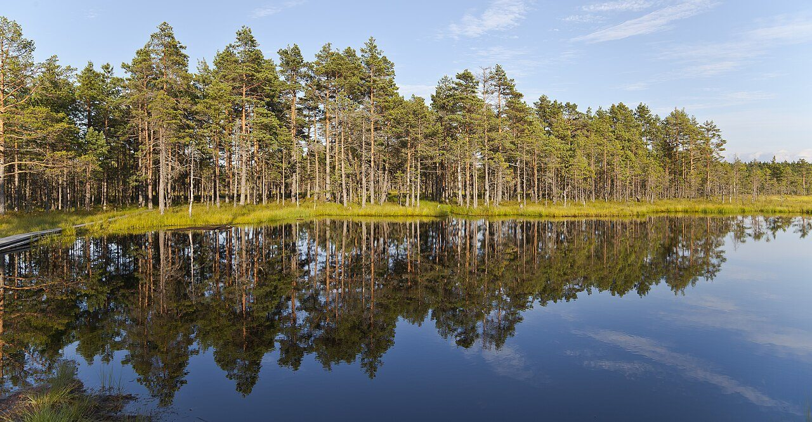
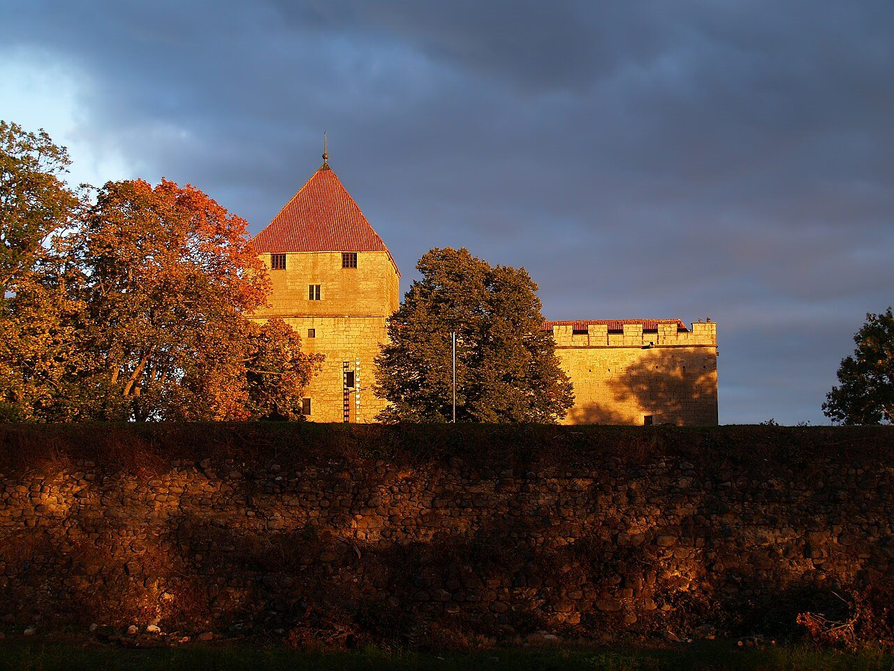

Estonia에스토니아 Eesti
중세 한자동맹의 거리와 디지털 국가, 숲과 습지의 발트해 공화국
- Capital
- 탈린 (Tallinn)
- Language
- 에스토니아어
- Currency
- 유로 (EUR)

탈린 구시가지Tallinn Old Town
얼어붙은 예갈라 폭포Jägala Waterfall in winter
라헤마 비루 습지Viru Bog, Lahemaa
쿠레사레 성Kuressaare Castle, SaaremaaExplore Estonia
에스토니아 더 알아보기
에스토니아는 발트해 동쪽의 북유럽적 문화권에 속하며 중세 탈린, 타르투 대학도시, 사레마 섬, 라헤마·소마의 늪지생태로 알려져 있다. 핀란드어와 가까운 에스토니아어는 슬라브어도 발트어도 아닌 우랄어족 언어다. 전자 신원·디지털 정부와 ICT 산업이 발달했으나, 관광·제조·임업 같은 실물경제도 중요한 비중을 차지한다.

Latest updates
에스토니아 최근 뉴스
-
발트 3국 밤새 드론 경보…리투아니아 NATO 전투기 출격·공항 폐쇄, 라트비아는 영공 진입 3대 확인
LRT에 따르면 11월 10일 밤 11시경 빌뉴스·우테나 지역에 경보가 발령된 뒤 곧 중부·북부 대부분으로 확대돼 적색 경보와 대피 요구까지 나왔습니다. NATO 전투기가 두 차례 출격했지만 드론을 격추하지 못했고, 비르자이 인근에서 NATO 전투기가 쏜 미사일 잔해가 발견됐습니다.
-
라트비아, 안보리 의장국으로 우크라이나 긴급회의 주재…에스토니아 외무 “아부다비 최선은 휴전”
LSM에 따르면 라트비아는 11월 9일 우크라이나의 요청으로 소집된 유엔 안보리 긴급회의를 의장국으로서 주재했습니다. 덴마크·프랑스·그리스·영국이 소집을 지지했습니다.
-
라트비아, 안보리 의장국으로 우크라이나 긴급회의 주재…에스토니아·리투아니아는 폴란드 연합군 훈련 참가
LSM에 따르면 라트비아는 우크라이나 요청과 덴마크·프랑스·그리스·영국 지지로 11월 9일 뉴욕에서 유엔 안보리 긴급회의를 소집·주재했습니다(라트비아 시간 17시 시작). 11월 2일 자포리지아주 코미슈바하의 구호품 배급소와 대피소 공습으로 50명 넘게 숨진 사건이 주된 사례였습니다.